O movimento marca a primeira compra da Elo no ano, diretamente
alinhada à sua estratégia de modernização tecnológica e à
transição de uma operadora transacional para uma plataforma de
serviços com foco em maior geração de valor agregado na jornada de
pagamentos.
Agentes inteligentes que entendem o contexto, respondem com precisão e executam ações financeiras em linguagem natural. Nossos agentes utilizam técnicas avançadas de prompt engineering, RAG e memória contextual.
Acesso seguro a dados bancários de múltiplas instituições via Open Finance Integrator, permitindo uma visão consolidada e personalizada para cada usuário.
Construído sobre a API oficial do WhatsApp Business. Presente em 99% dos smartphones brasileiros. Reduz o tempo de resposta, aumenta o engajamento e opera com criptografia de ponta a ponta.
Combinamos IA Generativa, Open Finance e a infraestrutura do WhatsApp para criar experiências financeiras conversacionais — de ponta a ponta.
Entenda como funcionaA experiência do seu cliente é 100% personalizada com a identidade visual da sua empresa. Logo, cores, tom de voz e fluxos sob medida. Seus clientes interagem com a sua marca, não com a nossa.
O Chatbank entende e processa qualquer formato de mensagem. Seu cliente pode digitar, gravar um áudio ou enviar uma foto — o sistema entende tudo.
A Inteligência Artificial é o coração do Chatbank. Cada conversa é contextual: o agente sabe quem é o cliente, seu histórico, e oferece respostas precisas e personalizadas. De "Faz um Pix" até a confirmação do pagamento — tudo na mesma conversa, sem fricção.
Utilizamos todas as funcionalidades avançadas do WhatsApp Business — Flows, Templates e Carrosséis — para proporcionar uma experiência rica, fluida e altamente profissional ao usuário. Não é chatbot de menu. É uma jornada financeira completa.
Do aumento do engajamento ao fortalecimento da marca, nosso trabalho é respaldado por impacto mensurável. Confira os números que comprovam nosso sucesso.
Dos smartphones brasileiros têm WhatsApp (165M+)
Crescimento de transações bancárias via WhatsApp em 12 meses (Febraban/Deloitte 2024)
Usuários ativos de WhatsApp no Brasil
Tecnologia escolhida pela maior bandeira de cartões 100% brasileira
Gestão inteligente de saldos de vale-alimentação, refeição, mobilidade e cultura. Tudo via WhatsApp! O colaborador consulta, transfere e recebe alertas sem sair da conversa.
Cotação, simulação e contratação de câmbio diretamente no WhatsApp, com conformidade regulatória.
Jornada completa de crédito conversacional, da simulação à contratação e ao acompanhamento.
Transforme o WhatsApp no principal ponto de contato com seus clientes, com IA e automação.
Pagamentos, vendas e relacionamento com clientes dentro do WhatsApp com apoio de IA.
O Chatbank nasceu com a convicção de que o WhatsApp seria o principal canal de relacionamento financeiro do Brasil. Construímos uma plataforma que une IA Generativa e Open Finance para transformar conversas em serviços financeiros completos.
"Estamos vivendo um marco na indústria de pagamentos com a aceleração do uso de IA. A aquisição da tecnologia do Chatbank posiciona a Elo como protagonista na evolução da jornada de pagamento com inteligência artificial."
"A combinação da nossa plataforma de IA com a capilaridade e a força da Elo vai transformar a forma como as pessoas interagem com seus serviços financeiros no dia a dia."